Objetivos de aprendizagem
No capítulo anterior, a probabilidade foi apresentada como uma função definida sobre eventos associados a um experimento aleatório, permitindo atribuir valores numéricos a diferentes ocorrências possíveis dentro de um espaço amostral. Com isso, estabelece-se uma linguagem formal para descrever a incerteza e para deduzir relações lógicas entre eventos, sempre tomando como referência o conjunto completo de resultados inicialmente considerados possíveis.
Em muitas situações, entretanto, a probabilidade de um evento não é avaliada de forma isolada, mas condicionada à ocorrência de outro evento no mesmo experimento. Nesses casos, a análise deixa de considerar todos os resultados possíveis e passa a se concentrar apenas naqueles que são compatíveis com a informação disponível, sem que isso altere o experimento aleatório nem o conjunto de resultados concebíveis. A mudança ocorre no conjunto que serve de referência para o cálculo das probabilidades, que passa a ser um subconjunto do espaço amostral original.
Essa mudança de referência está diretamente relacionada à forma como probabilidades são calculadas. Antes, considerando que os resultados do experimento são igualmente possíveis, a avaliação de uma probabilidade envolve a comparação entre o número de resultados favoráveis e o número total de elementos do espaço amostral. Por outro lado, quando a análise é condicionada, o conjunto de referência deixa de ser o espaço amostral completo e passa a ser o subconjunto compatível com a condição, de modo que o problema probabilístico envolve simultaneamente a identificação dos resultados relevantes e a contagem dos casos que compõem esse novo universo de comparação.
Nesse contexto, a análise combinatória surge como instrumento natural para a determinação dessas quantidades, permitindo descrever de forma sistemática como os resultados são organizados e como podem ser contados. Ao mesmo tempo, a restrição do espaço amostral conduz à definição de probabilidade condicional, que formaliza a avaliação de eventos dentro de um conjunto de referência reduzido. Esses dois aspectos não são independentes, mas partes de uma mesma estrutura, na qual a forma de contar resultados e a forma de medir probabilidades estão diretamente conectadas.
Neste capítulo, esses elementos serão desenvolvidos de forma articulada. Inicialmente, discute-se como a ocorrência de um evento pode restringir o espaço amostral relevante e como essa restrição conduz à definição de probabilidade condicional. Em seguida, apresentam-se relações fundamentais entre probabilidades, como a regra do produto, o teorema da probabilidade total e a fórmula de Bayes. Depois, mostram-se os principais instrumentos da análise combinatória como forma de resolver problemas probabilísticos em modelos finitos. Por fim, define-se a independência entre eventos como um caso particular em que o condicionamento não altera a probabilidade.
Ao considerar um evento como condição, a análise deixa de envolver todos os resultados do experimento e passa a se desenvolver apenas dentro do subconjunto que satisfaz essa condição. O experimento aleatório permanece inalterado, assim como o conjunto de resultados concebíveis, mas o conjunto efetivamente considerado na avaliação dos eventos torna-se mais restrito.

A partir desse ponto, é necessário explicitar como esse subconjunto é determinado, quais resultados permanecem relevantes e de que maneira as probabilidades passam a ser avaliadas nesse novo contexto.
O subconjunto de referência surge ao se fixar um evento como condição. Considere o experimento do lançamento de um dado honesto de seis faces, cujo espaço amostral é \( \Omega = \{1,2,3,4,5,6\} \). Ao impor como condição que o resultado seja par, define-se o subconjunto \( B = \{2,4,6\} \), reunindo os resultados que respeitam a condição imposta e passa a funcionar como novo conjunto de referência — ou seja, restringindo o espaço amostral considerado.
Em termos formais, essa condição corresponde a um evento \( B \) contido no espaço amostral:
\[ B \subseteq \Omega. \]
A análise passa, assim, a se desenvolver no interior de \( B \), no qual permanecem apenas as realizações compatíveis com a condição considerada.
Uma vez determinado o subconjunto de referência, nem todos os resultados de um evento permanecem relevantes. Considere novamente o lançamento do dado sob a condição \( B = \{2,4,6\} \) e que o evento de interesse seja “números maiores que três”, descrito por \( A = \{4,5,6\} \). Parte das realizações de \( A \) deixa de ser considerada, pois não satisfaz a condição imposta pelo evento \( B \).
Os resultados que permanecem possíveis são aqueles que pertencem simultaneamente a \( A \) e a \( B \), sendo descritos pela interseção dos conjuntos:
\[ A \cap B = \{4,6\}. \]
De forma geral, ao considerar um evento \( A \) sob a condição \( B \), o conjunto relevante para a análise passa a ser \( A \cap B \), que reúne exatamente as realizações de \( A \) compatíveis com o conjunto de referência adotado.
A mudança do conjunto de referência implica também uma mudança na forma de avaliar probabilidades. Retomando o exemplo, sob a condição \( B = \{2,4,6\} \), os resultados relevantes para o evento \( A \) são aqueles pertencentes a \( A \cap B = \{4,6\} \). A avaliação da ocorrência de \( A \) passa, então, a depender da proporção desses resultados em relação ao conjunto de referência \( B \).

Como o conjunto \( B \) contém três resultados possíveis, enquanto \( A \cap B \) contém dois, a probabilidade de \( A \) sob a condição considerada é dada pela razão entre essas quantidades:
\[ \frac{n(A \cap B)}{n(B)} = \frac{2}{3}. \]
De forma geral, ao considerar um evento \( A \) sob a condição \( B \), a medida de sua ocorrência passa a ser obtida pela comparação entre o conjunto de resultados relevantes \( A \cap B \) e o conjunto de referência \( B \), estabelecendo a base para a definição de probabilidade condicional.
A seção anterior reuniu os conceitos necessários para a compreensão intuitiva da probabilidade condicional. Ao se fixar um evento como condição para a realização de outro, introduz-se uma informação que modifica o referencial da análise. O cálculo deixa de ser feito em relação ao espaço amostral completo e passa a tomar como referência um subconjunto específico, que reúne apenas os resultados que respeitam a condição imposta. A partir disso, é possível formalizar a definição de probabilidade condicional.

Sejam \( A \) e \( B \) eventos associados a um mesmo experimento aleatório, com espaço amostral \( \Omega \). Nessas condições, define-se a probabilidade do evento \( A \) dado o evento \( B \) como a razão entre \( P(A \cap B) \) e \( P(B) \), com \( P(B) > 0 \).
\[ P(A \mid B) = \frac{P(A \cap B)}{P(B)}, \quad \text{para } P(B) > 0. \]
Retomando o experimento de lançamento de um dado, suponha que a condição seja o evento \( B = \{2,4,6\} \), cuja probabilidade é \( P(B) = \frac{3}{6} \), e que o evento de interesse seja \( A = \{4,5,6\} \). Como \( A \cap B = \{4,6\} \) possui dois elementos, tem-se \( P(A \cap B) = \frac{2}{6} \).
Logo, a probabilidade condicional de \( A \mid B \) é dada por
\[ P(A \mid B) = \frac{P(A \cap B)}{P(B)}= \frac{\frac{2}{6}}{\frac{3}{6}} = \frac{2}{3} \]
.Essa expressão torna explícita a lógica da análise condicionada, na qual o numerador corresponde ao evento relevante sob a condição, enquanto o denominador ajusta a escala de comparação de modo que o conjunto \( B \) passe a desempenhar o papel de referência total, normalizando a razão e permitindo interpretar o resultado como uma probabilidade dentro do universo restrito definido pela condição.
A definição de probabilidade condicional não serve apenas para reinterpretar probabilidades sob uma condição. Ela também permite deduzir identidades úteis que relacionam probabilidades de eventos e de suas interseções. Essas relações são consequências diretas da definição e serão usadas com frequência para transformar expressões e reorganizar cálculos.
Nesta seção, serão destacadas três relações centrais. A primeira reescreve a probabilidade de uma interseção em termos de uma probabilidade condicional e da probabilidade do evento condicionante. A segunda permite decompor a probabilidade de um evento em diferentes casos mutuamente exclusivos. A terceira fornece uma forma de inverter probabilidades condicionais quando se dispõe de informações mais convenientes sobre a relação entre os eventos.
A chamada regra do produto não introduz um novo conceito, mas resulta diretamente de uma reorganização algébrica da definição de probabilidade condicional. Essa forma de decompor o problema permite relacionar probabilidades de interseção com probabilidades condicionais.
Sejam \( A \) e \( B \) eventos com \( P(B) > 0 \). Pela definição de probabilidade condicional, tem-se
\[ P(A \mid B) = \frac{P(A \cap B)}{P(B)}. \]
Essa expressão pode ser reorganizada isolando a probabilidade da interseção. Multiplicando ambos os lados por \( P(B) \), obtém-se
\[ P(A \cap B) = P(A \mid B)\,P(B). \]
Essa identidade mostra que a probabilidade de ocorrência conjunta de \( A \) e \( B \) pode ser obtida em duas etapas: primeiro considera-se a probabilidade de \( B \) ocorrer; em seguida, pondera-se esse valor pela probabilidade de \( A \) ocorrer dentro do subconjunto de resultados em que \( B \) já ocorreu.
De forma equivalente, pode-se inverter o papel dos eventos, desde que \( P(A) > 0 \), obtendo
\[ P(A \cap B) = P(B \mid A)\,P(A). \]
Essas duas formas expressam a mesma probabilidade conjunta, mas partem de diferentes escolhas de condicionamento.
A regra do produto mostrou que a probabilidade da interseção de dois eventos pode ser escrita a partir de diferentes escolhas de condicionamento. Quando essas duas formas são igualadas, obtém-se uma relação que permite reescrever uma probabilidade condicional \( P(A \mid B) \) em função da condicional inversa \( P(B \mid A) \). Essa relação é conhecida como fórmula de Bayes.
Sejam \( A \) e \( B \) eventos com \( P(A) > 0 \) e \( P(B) > 0 \). Pela regra do produto, tomando \( B \) como referência para o condicionamento, tem-se
\[ P(A \cap B)=P(A \mid B)\,P(B). \]
Como as duas expressões representam a mesma probabilidade de interseção, pode-se igualá-las.
\[ P(A \mid B)\,P(B)=P(B \mid A)\,P(A). \]
Isolando \( P(A \mid B) \), obtém-se
\[ P(A \mid B)=\frac{P(B \mid A)\,P(A)}{P(B)}. \]
Essa é a fórmula de Bayes.
Em muitos problemas, um mesmo evento pode ocorrer por diferentes caminhos ou sob diferentes situações possíveis. Nesses casos, para calcular sua probabilidade, é útil separar a análise em casos mutuamente exclusivos e depois somar as contribuições de cada um deles.
Quando isso ocorre, diz-se que \( B_1, B_2, \ldots, B_n \) formam uma partição do espaço amostral.
Isso implica que o evento \( A \) pode ser decomposto em partes disjuntas.
\[ A = (A \cap B_1)\cup(A \cap B_2)\cup\cdots\cup(A \cap B_n). \]
Como não há sobreposição entre os casos, a probabilidade de \( A \) é a soma das probabilidades dessas partes.
\[ P(A)=\sum_{i=1}^n P(A \cap B_i). \]
Aplicando a regra do produto a cada termo, obtém-se o teorema da probabilidade total.
\[ P(A)=\sum_{i=1}^n P(A \mid B_i)\,P(B_i). \]
Essa fórmula mostra que a probabilidade de \( A \) pode ser calculada como a soma das probabilidades em cada caso, ponderadas pela probabilidade de cada caso.
Em muitos experimentos aleatórios com número finito de resultados, o cálculo de probabilidades depende diretamente da determinação de quantos casos podem ocorrer. Essa tarefa se torna especialmente importante quando os resultados são produzidos por escolhas sucessivas, isto é, por etapas em que cada decisão abre novas possibilidades para a etapa seguinte.
A figura acima ilustra precisamente esse tipo de situação. Parte-se de uma escolha inicial e, a partir de cada possibilidade obtida, realiza-se uma nova escolha. O conjunto final de resultados possíveis é formado por todas as combinações geradas ao longo dessas etapas. Assim, a contagem dos casos não é feita de modo desordenado, mas por meio da descrição da estrutura do processo que gera os resultados.
Esse tipo de raciocínio é fundamental em probabilidade. Quando o espaço amostral é finito e os resultados são equiprováveis, calcular a probabilidade de um evento equivale a comparar casos favoráveis e casos possíveis. Escrevendo \( n(A) \) para o número de elementos do evento \( A \) e \( n(\Omega) \) para o número de elementos do espaço amostral, tem-se
\[ P(A)=\frac{n(A)}{n(\Omega)}. \]
Desse modo, a resolução de muitos problemas probabilísticos passa, antes de tudo, pela capacidade de contar corretamente os resultados gerados pelo experimento. É nesse ponto que entra a análise combinatória, fornecendo métodos para descrever e enumerar, de forma sistemática, as possibilidades envolvidas.
Como visto, em experimentos finitos com resultados equiprováveis, o cálculo de probabilidades depende da contagem dos elementos dos conjuntos envolvidos. Para realizar essa contagem de forma sistemática, é necessário descrever como os resultados do experimento são gerados. Em muitos casos, cada resultado pode ser interpretado como uma sequência de escolhas realizadas em etapas sucessivas. Nessas situações, contar os elementos do espaço amostral equivale a contar combinações de escolhas.
Para compreender essa ideia, considere um procedimento realizado em etapas sucessivas. Suponha que, a partir de um ponto inicial \( A \), seja possível chegar a \( B \) por dois caminhos distintos e, em seguida, a partir de \( B \), seja possível chegar a \( C \) também por dois caminhos distintos.
Cada percurso completo de \( A \to C \) é determinado por uma sequência de escolhas: primeiro escolhe-se um dos caminhos de \( A \to B \), e depois um dos caminhos de \( B \to C \). Assim, cada resultado possível corresponde a um par ordenado de decisões. Como existem duas escolhas possíveis na primeira etapa e, para cada uma delas, duas escolhas possíveis na segunda, o número total de percursos distintos é dado por
\[ 2 \cdot 2 = 4. \]
Esse raciocínio ilustra o princípio fundamental da contagem, quando um processo é composto por etapas sucessivas, o número total de resultados possíveis é obtido combinando todas as escolhas de cada etapa.
De forma geral, se a primeira etapa pode ocorrer de \( n_1 \) maneiras e, para cada uma delas, a segunda etapa pode ocorrer de \( n_2 \) maneiras, então o número total de resultados possíveis é
\[ n_1 \cdot n_2. \]
Esse princípio se generaliza para qualquer número finito de etapas. Se um experimento envolve \( k \) etapas sucessivas, com \( n_1, n_2, \ldots, n_k \) possibilidades em cada uma delas, então o número total de resultados possíveis é
\[ n_1 \cdot n_2 \cdot \ldots \cdot n_k. \]
Em termos probabilísticos, esse princípio permite reduzir probabilidades a contagem.
O princípio fundamental da contagem permite determinar o número de resultados possíveis sempre que um experimento pode ser descrito como uma sequência de escolhas. Um caso particularmente importante ocorre quando essas escolhas correspondem à ordenação completa de um conjunto de elementos distintos.
Essa situação pode ser compreendida a partir de um exemplo simples. Suponha que \( n \) pessoas distintas devam formar uma fila. Nesse caso, cada resultado possível corresponde a uma sequência de escolhas em que, a cada etapa, seleciona-se um dos elementos ainda disponíveis. Como cada pessoa só pode ocupar uma posição, as escolhas são feitas sem reposição.
Para a primeira posição, há \( n \) possibilidades. Após essa escolha, restam \( n - 1 \) opções para a segunda posição. Em seguida, restam \( n - 2 \) possibilidades para a terceira, e assim sucessivamente, até que reste apenas uma possibilidade para a última posição.
Aplicando o princípio fundamental da contagem, o número total de sequências possíveis é dado pelo produto das escolhas em cada etapa:
\[ n(n - 1)(n - 2)\cdots 1. \]
Esse produto corresponde ao número de maneiras distintas de ordenar todos os elementos. Por conveniência, essa quantidade é denotada por fatorial:
\[ n! = n(n - 1)(n - 2)\cdots 1. \]
Assim, o número de permutações de \( n \) elementos distintos é
\[ P_n = n!. \]
Em termos conceituais, uma permutação corresponde ao caso em que todas as posições são preenchidas.
Em muitas situações, porém, não é necessário considerar toda a fila, podendo interessar apenas quais elementos ocupam os \( k \) primeiros lugares. Nesse caso, cada resultado possível passa a ser descrito apenas pelas primeiras posições.
Um resultado pode ser representado como uma sequência ordenada com \( k \) elementos.
\[ ( A,B,C ) \]
Dois resultados são distintos sempre que diferem em pelo menos uma dessas posições.
Pelo princípio fundamental da contagem, o número total de sequências ordenadas é
\[ n(n - 1)(n - 2)\cdots(n - k + 1). \]
Essa quantidade pode ser escrita como arranjos:
\[ A_{n,k}=\frac{n!}{(n-k)!}. \]
A permutação corresponde ao caso particular em que \( k = n \).
Há situações em que o interesse não está na ordem, mas apenas em quais elementos foram selecionados. Nesse caso, cada resultado é um conjunto de \( k \) elementos.
Diferentes sequências podem corresponder ao mesmo resultado.
\[ (A,B,C),\ (B,A,C),\ (C,B,A) \]
Isso mostra que cada grupo é contado várias vezes nos arranjos. Como há \( k! \) ordenações, cada grupo aparece \( k! \) vezes.
Para eliminar essa multiplicidade, divide-se o número de arranjos por \( k! \).
\[ \binom{n}{k} = \frac{A_{n,k}}{k!}. \]
Substituindo, obtém-se
\[ \binom{n}{k} = \frac{n!}{k!(n-k)!}. \]
A combinação conta apenas quais elementos foram escolhidos, sem considerar a ordem.
As técnicas de contagem apresentadas permitem calcular probabilidades em modelos nos quais todos os resultados são igualmente prováveis. Nesse caso, a probabilidade de um evento pode ser obtida como a razão entre o número de casos favoráveis e o número total de casos possíveis, de modo que o problema probabilístico se reduz à determinação dessas duas quantidades. A análise combinatória fornece, nesse contexto, os instrumentos necessários para descrever e contar sistematicamente os resultados associados a um experimento.
A escolha do instrumento de contagem depende da forma como os resultados são estruturados. Em experimentos compostos por etapas sucessivas, o princípio fundamental da contagem permite determinar a cardinalidade do espaço amostral a partir da multiplicação das possibilidades em cada etapa. Quando os resultados são descritos como sequências ordenadas, em que a posição de cada elemento é relevante, utilizam-se arranjos ou permutações. Por outro lado, quando apenas o conjunto de elementos selecionados importa, sem distinção de ordem, a contagem adequada é fornecida pelas combinações.
Essa distinção pode ser observada em diferentes situações. Ao formar uma comissão a partir de um grupo de pessoas, por exemplo, a ordem de escolha não altera o resultado, de modo que o número total de casos possíveis deve ser contado por combinações. Já em problemas de construção de códigos ou de atribuição de posições, em que sequências distintas correspondem a resultados diferentes, a contagem adequada recai sobre arranjos ou permutações. Em cada caso, a estrutura do experimento determina a forma correta de contagem.
A mesma lógica se aplica ao cálculo de probabilidades condicionais. Se os resultados de um experimento são equiprováveis e se uma condição \( B \) restringe a análise a um subconjunto do espaço amostral, então calcular \( P(A \mid B) \) consiste em comparar resultados relevantes com o conjunto condicionado, isto é, comparar o número de resultados pertencentes a \( A \cap B \) com o número total de resultados compatíveis com a condição, representado por \( B \). Desse modo, a análise combinatória se integra diretamente ao cálculo probabilístico sob condicionamento, fornecendo os meios para avaliar probabilidades em espaços restritos.
A probabilidade condicional mostrou que a ocorrência de um evento pode alterar a avaliação de outro ao restringir o espaço amostral. Essa alteração ocorre devido à incorporação de informação adicional ao cálculo da probabilidade; de modo que, dada a ocorrência de um evento e sabendo que ele exerce influência sobre a realização de outro, passa-se a considerar apenas o subconjunto relevante dos resultados possíveis entre esses dois eventos. Há situações, contudo, em que essa restrição não produz qualquer efeito sobre a probabilidade do outro evento. Quando isso acontece, diz-se que os eventos são independentes.
Essa ideia contrasta diretamente com os casos abordados no capítulo anterior de eventos mutuamente exclusivos. Quando dois eventos não possuem resultados em comum, a ocorrência de um elimina completamente a possibilidade de ocorrência do outro. Nesse caso, a informação de que um evento ocorreu altera de modo radical a avaliação probabilística do outro. A independência corresponde a uma situação distinta. Ou seja, os eventos podem ocorrer simultaneamente, mas a ocorrência de um não modifica a probabilidade do outro. A questão central, portanto, já não é a existência de interseção, mas o efeito da informação sobre a probabilidade.
A noção de independência torna-se mais clara quando se observa como a restrição do espaço amostral atua em experimentos que envolvem mais de um resultado simultâneo. Até aqui, os experimentos foram descritos, em geral, por um único resultado em cada realização, como no lançamento de um dado; porém, ao considerar o lançamento de duas moedas, cada resultado passa a ser descrito por um par ordenado, indicando o que ocorreu em cada lançamento, de modo que o espaço amostral passa a reunir todas as combinações possíveis entre esses resultados.
Essa mudança permite distinguir eventos que dizem respeito a apenas um dos lançamentos daqueles que envolvem ambos. Por exemplo, pode-se considerar o evento de a primeira moeda resultar em cara ou o evento de a segunda moeda resultar em cara, cada um associado a uma das posições do resultado. Nesse contexto, diz-se que dois eventos são independentes quando a informação sobre o resultado de um deles não altera a probabilidade do outro, mesmo após a restrição do espaço amostral.
Considere o lançamento de duas moedas honestas — isto é, todos os resultados são equiprováveis. O espaço amostral é dado por
\[ \Omega=\{HH, HT, TH, TT\}, \]
em que:
\[ H : \text{Cara} \qquad e \qquad T : \text{Coroa}, \]
sendo a primeira posição associada à primeira moeda e a segunda à segunda, de modo que cada resultado registra simultaneamente o que ocorreu em cada uma delas.
Considere inicialmente um evento que depende apenas do primeiro lançamento: o evento de a primeira moeda resultar em cara. Esse evento ocorre sempre que o primeiro símbolo do resultado é \( H \), o que, no espaço amostral, corresponde ao conjunto
\[ A=\{HH,HT\}. \]
Como dois dos quatro resultados possíveis pertencem a esse conjunto, segue que
\[ P(A)=\frac{1}{2}. \]
Suponha agora que se saiba que a segunda moeda resultou em cara. Essa informação restringe a análise aos resultados em que o segundo símbolo é \( H \), isto é, ao subconjunto
\[ B=\{HH,TH\}. \]
Dentro desse novo espaço amostral, o evento de a primeira moeda resultar em cara continua ocorrendo quando o primeiro símbolo é \( H \), o que acontece apenas no resultado \( HH \). Assim, entre os dois resultados compatíveis com a informação disponível, apenas um é favorável ao evento considerado, de modo que
\[ P(A\mid B)=\frac{1}{2}. \]
Observa-se, portanto, que a informação de que a segunda moeda resultou em cara não altera a probabilidade de a primeira moeda resultar em cara.
De forma geral, sejam \( A \) e \( B \) dois eventos associados ao mesmo experimento aleatório. Esses eventos são independentes quando a ocorrência de um não altera a probabilidade do outro. Para \( P(B)>0 \), essa condição pode ser expressa por
\[ P(A\mid B)=P(A). \]
A independência não se caracteriza pela ausência de interseção.
\[ A\cap B=\{HH\}, \]
de modo que os eventos podem ocorrer simultaneamente. Ainda assim, a ocorrência de um não altera a probabilidade do outro. A independência descreve precisamente essa situação em que a restrição do espaço amostral preserva as proporções relevantes para o cálculo probabilístico.
A definição anterior pode ser reescrita em uma forma equivalente que envolve apenas as probabilidades dos eventos e de sua interseção.
\[ P(A \mid B)=\frac{P(A\cap B)}{P(B)}, \]
e substituindo a condição \( P(A\mid B)=P(A) \), obtém-se
\[ P(A\cap B)=P(A)\,P(B). \]
Nessa forma, a independência aparece como uma relação entre interseção e produto.
Essa caracterização permite explicitar com mais precisão a diferença em relação aos eventos mutuamente exclusivos. Quando \( A\cap B=\varnothing \), os eventos não podem ocorrer ao mesmo tempo.
\[ P(A\mid B)=0. \]
A exclusão mútua representa, assim, uma forma extrema de dependência.
Em todos os casos, o critério formal permanece o mesmo: a restrição do espaço amostral não altera a probabilidade do evento considerado.
Neste capítulo, a probabilidade condicional foi introduzida como uma forma de avaliar eventos quando se dispõe da informação de que um determinado evento ocorreu. A ideia central consistiu em interpretar essa informação como uma restrição do espaço amostral, de modo que a probabilidade passe a ser considerada dentro de um subconjunto do espaço amostral original, sem alterar o experimento aleatório nem os eventos envolvidos. Nesse contexto, a definição formal da probabilidade condicional estabeleceu uma relação direta entre o condicionamento e a interseção de eventos, permitindo expressar probabilidades em termos de conjuntos compatíveis com a condição imposta.
A partir dessa estrutura, foram obtidas relações fundamentais como a regra do produto, o teorema da probabilidade total e a fórmula de Bayes, que permitem reorganizar expressões probabilísticas e relacionar diferentes formas de condicionamento. Ao mesmo tempo, mostrou-se que, em modelos finitos equiprováveis, o cálculo de probabilidades pode ser reduzido à contagem de casos, de modo que a análise combinatória fornece os instrumentos necessários para determinar a cardinalidade do espaço amostral e dos eventos de interesse, conectando diretamente a estrutura probabilística a procedimentos de contagem.
Nesse mesmo quadro conceitual, a independência foi definida como um caso particular em que o condicionamento não modifica a probabilidade do evento de interesse. Essa caracterização formaliza a ideia de ausência de influência probabilística e conduz à condição \( P(A \cap B)=P(A)\,P(B) \), que sintetiza a independência como ausência de influência probabilística, relacionando de maneira simples a probabilidade conjunta ao produto das probabilidades individuais.
Com esses resultados, completa-se uma etapa importante do estudo da probabilidade, na qual a noção de restrição do espaço amostral, a forma de medir probabilidades em contextos condicionados e os instrumentos de contagem passam a compor uma estrutura unificada. Nos capítulos seguintes, essas ideias servirão de base para a introdução das variáveis aleatórias e de suas distribuições, permitindo representar quantitativamente o comportamento de fenômenos aleatórios em contextos discretos e contínuos.
FÁVERO, Luiz Paulo; BELFIORE, Patrícia. Manual de análise de dados: estatística e modelagem multivariada com Excel®, SPSS® e Stata®. 1. ed. Rio de Janeiro: Elsevier, 2017.
MAGALHÃES, Marcos Nascimento; LIMA, Antonio Carlos Pedroso de. Noções de Probabilidade e Estatística. 7. ed., 1. reimpr. São Paulo: Editora da Universidade de São Paulo, 2011.
SARTORIS, Alexandre. Estatística e introdução à econometria. 2. ed. São Paulo: Saraiva, 2013.
BUSSAB, Wilton de Oliveira; MORETTIN, Pedro Alberto. Estatística básica. 10. ed. São Paulo: SaraivaUni, 2023.
LARSON, Ron; FARBER, Betsy. Estatística aplicada. 6. ed. Tradução José Fernando Pereira Gonçalves; Revisão técnica Manoel Henrique Salgado. São Paulo: Pearson Education do Brasil, 2015.
TRIOLA, Mario F. Introdução à estatística. 12. ed. Tradução e revisão técnica Ana Maria Lima de Farias, Vera Regina Lima de Farias e Flores. Rio de Janeiro: LTC — Livros Técnicos e Científicos Editora, 2017.
MOOD, Alexander McFarlane; GRAYBILL, Franklin A.; BOES, Duane C. Introduction to the theory of statistics. New York: McGraw-Hill, 1974.
SAVAGE, Leonard J. The Foundations of Statistics. 2. ed. rev. New York: Dover Publications, 1972.
WARE, William B.; FERRON, John M.; MILLER, Barbara M. Introductory Statistics: A Conceptual Approach Using R. New York: Routledge, 2013.